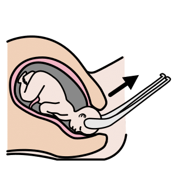
arasaac 31706
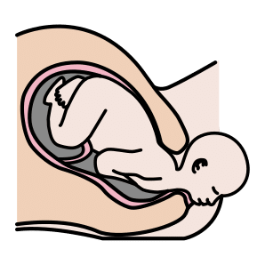
arasaac 31707
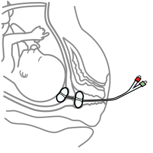
arasaac 31769
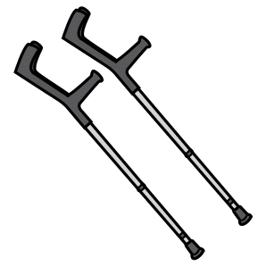
arasaac 6154
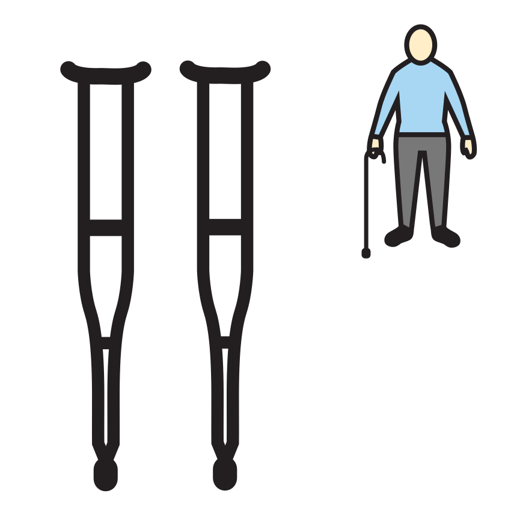
mulberry crutches
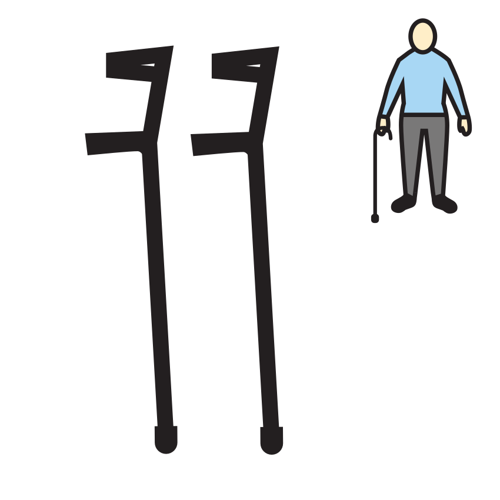
mulberry crutches_1
openmoji E326
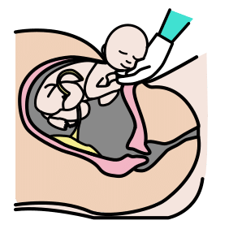
arasaac 32020
arasaac 32144
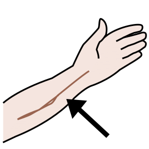
arasaac 5428
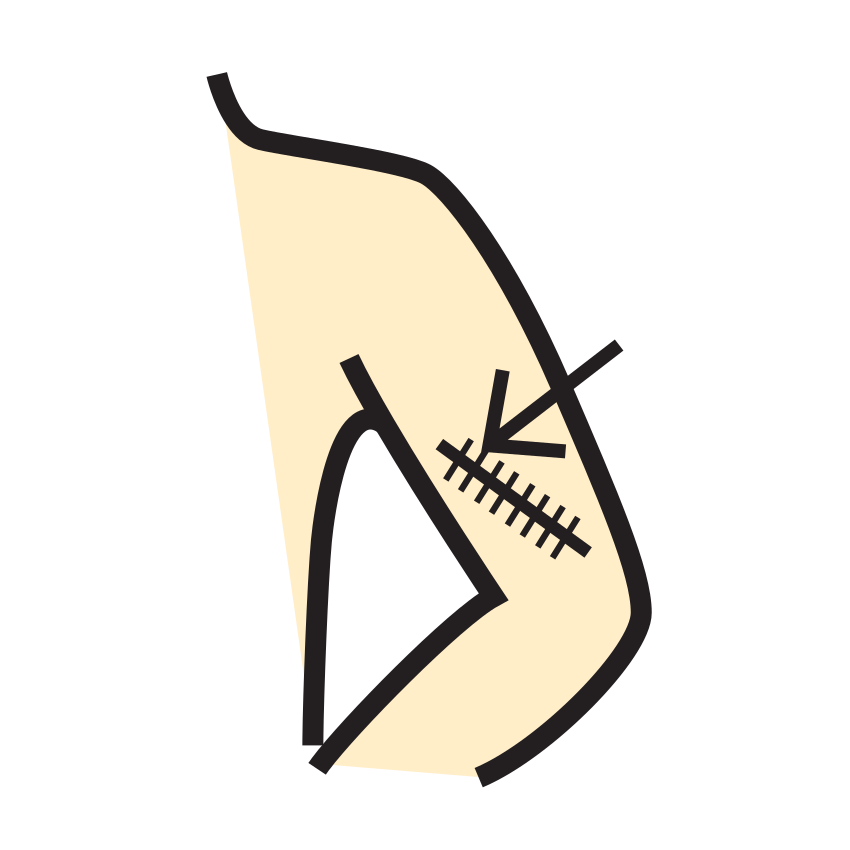
mulberry scar
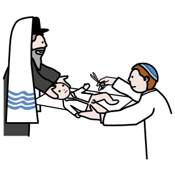
arasaac 36123
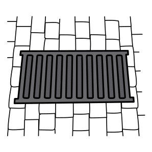
arasaac 17163
arasaac 32896
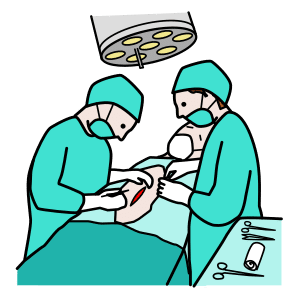
arasaac 27925
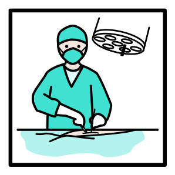
arasaac 28019
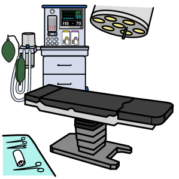
arasaac 38063
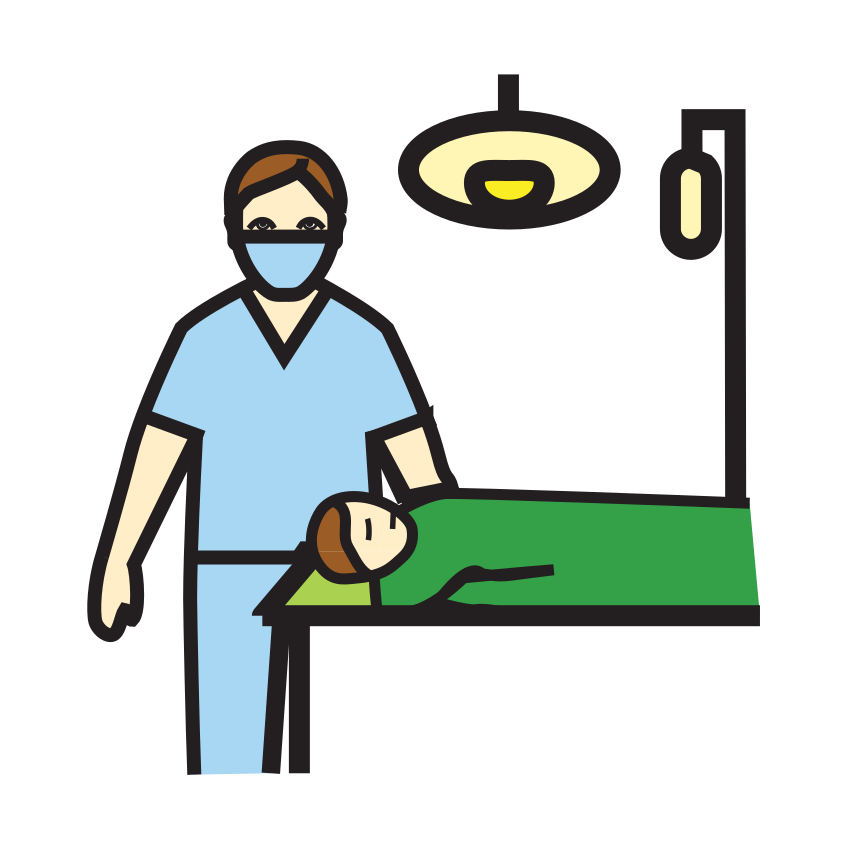
mulberry operation
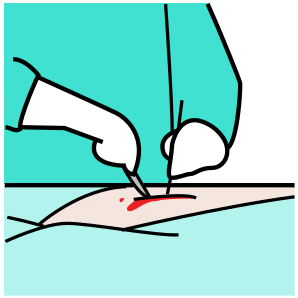
arasaac 5530

arasaac 25315
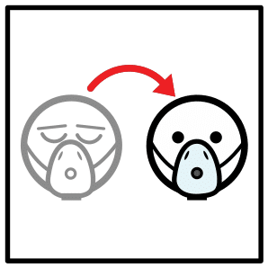
arasaac 35329
arasaac 35615
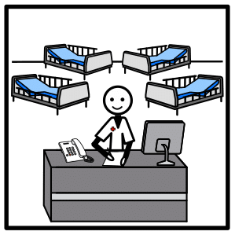
arasaac 38876
arasaac 28625
arasaac 31857
arasaac 8988
arasaac 8989
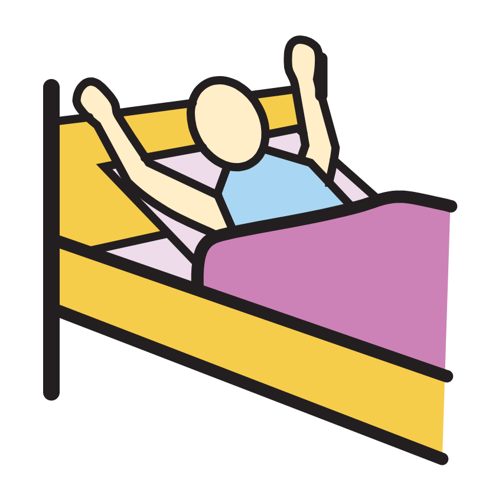
mulberry wake_up_,_to
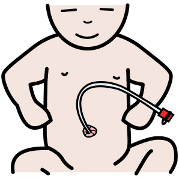
arasaac 32252
arasaac 33912